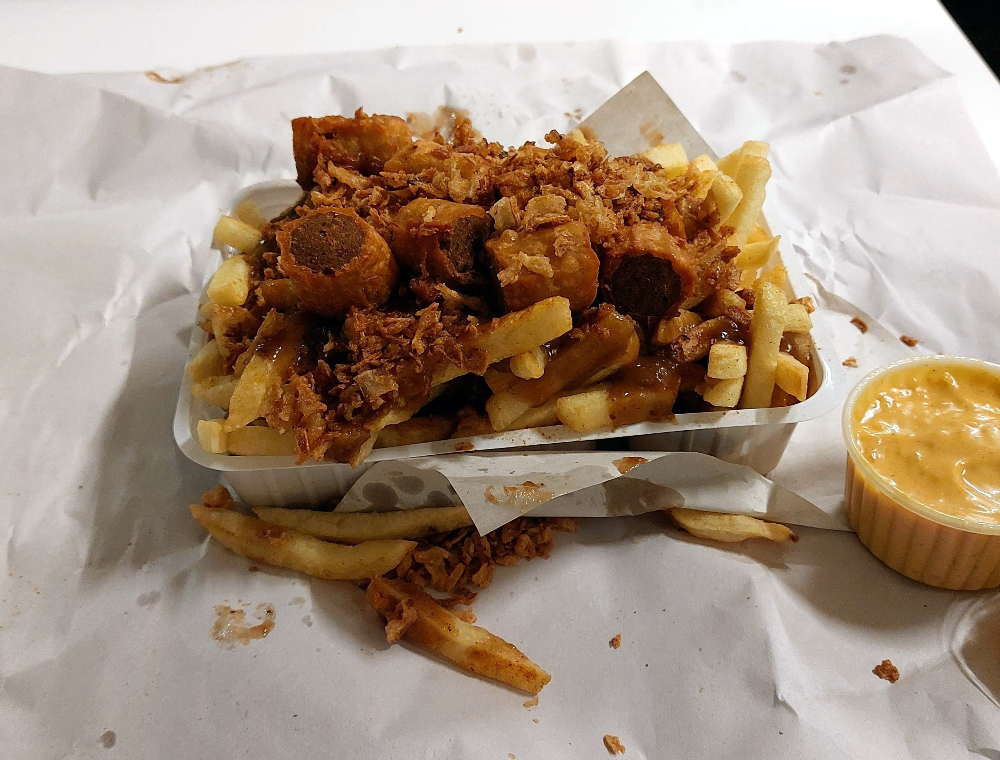
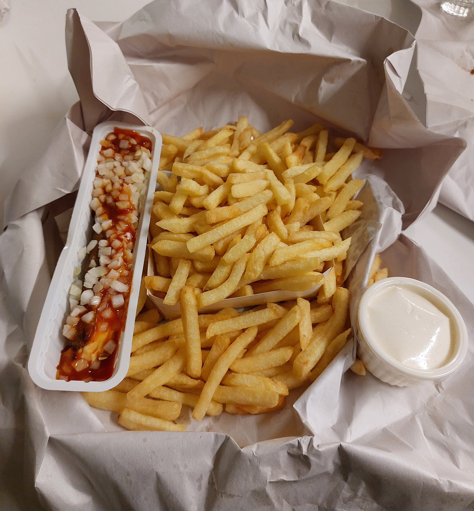
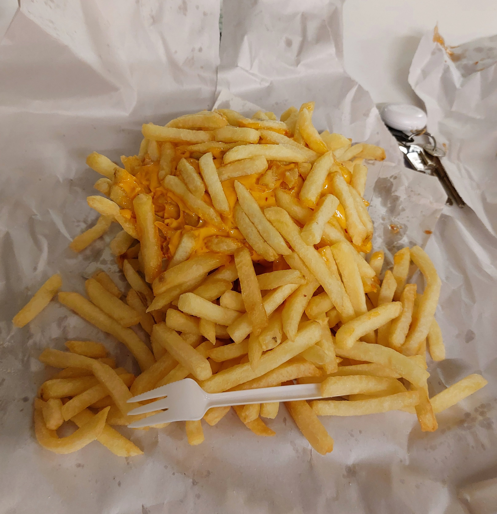

De Gouden Saté is een bekende frituur in Gent, gelegen aan het Sint-Pietersplein. Het is de geboorteplaats van het beroemde Julientje en is door de jaren
heen uitgegroeid tot een klein culinair icoon van de stad. Met zijn zeer late openingsuren is deze frituur niet weg te denken uit het Gentse uitgaansleven.
Met een fantastische score van 8,7 zal De Gouden Saté wellicht hoog eindigen in onze ranglijst!
Wij zijn benieuwd hoeveel van de komende frituren nog in de buurt van zo’n hoge score zullen komen...



